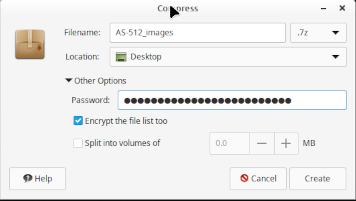
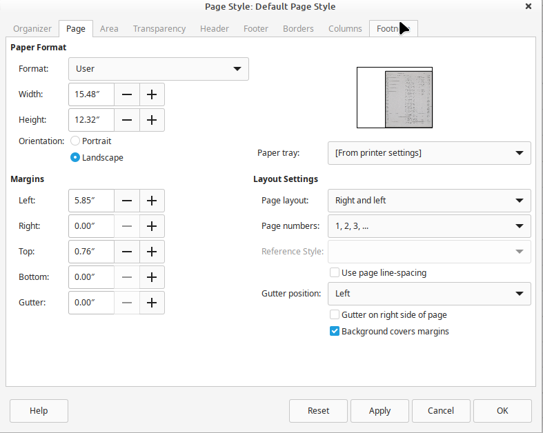
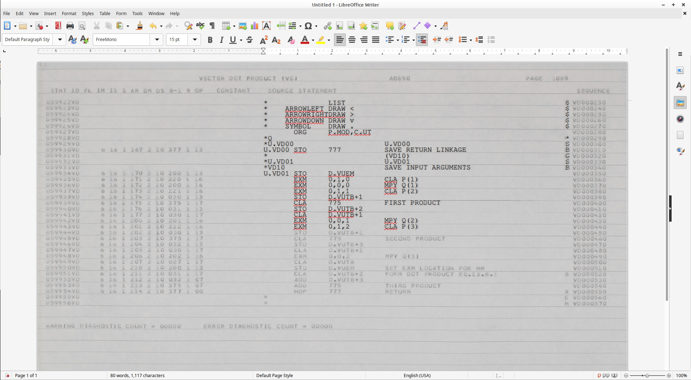
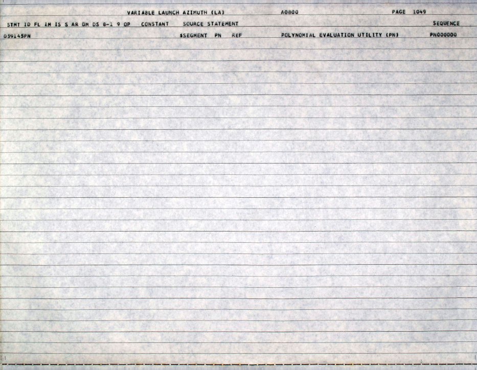
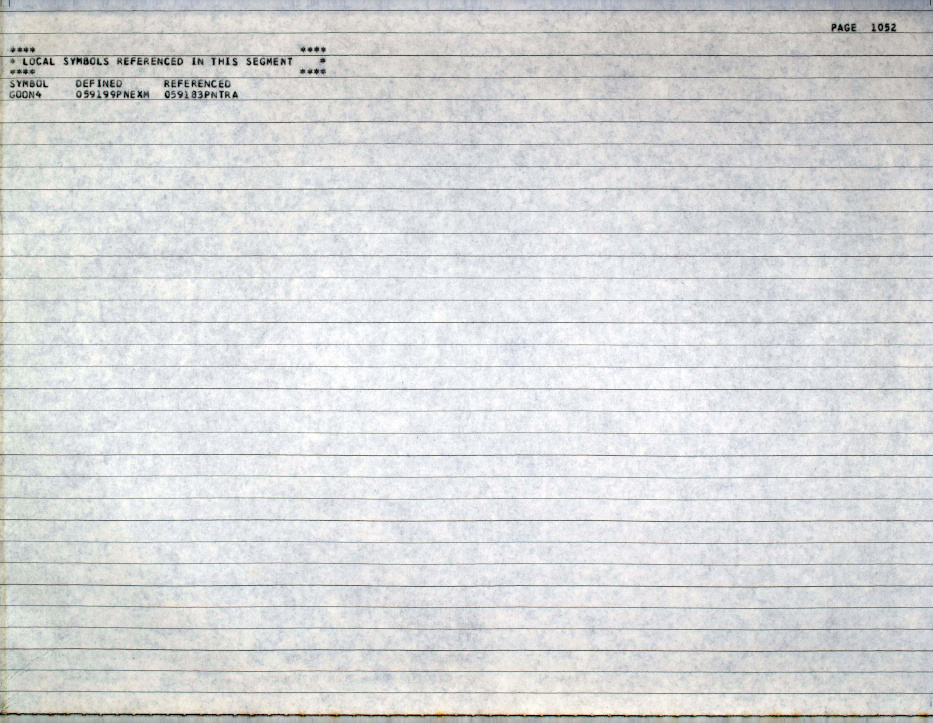

LVDC Source-Code Transcription Guidelines
History
- 2023-04-11. First release.
- 2023-04-13. Included hints on demonstrating U.S.
Citizenship.
- 2023-04-14. Notes on "transparency" in word processors
and particularly LibreOffice Writer.
- 2023-04-15. Added warning about Google Docs, Microsoft
365, et al.
- 2023-04-16. Added note about specialized AGC font.
- 2023-04-18. Added the Contents section and the
Poorly-Scanned Pages section.
- 2023-04-19. Improved descriptions of LibreOffice setup,
hopefully.
- 2023-04-20. The "Other Portions ..." section was updated
to cover questions raised by James Pelster. Added the
"Obvious Typos ..." section.
- 2023-04-22. Some clarifications in the discussion of HOP*,
and in omission of certain lines (like macro expansions) from
the transcription.
- 2023-04-24. Workaround for inexplicable "freezes" in
LibreOffice Writer added to the hints at the end of the
LibreOffice section.
- 2023-04-25. Added the
module-status spreadsheet for tracking the assignments and
the completed transcriptions.
- 2023-04-27. Updated the vim colorization.
Some additional comments were added to the "Obvious Typos ..."
section.
- 2023-04-28. The use of the TITLE field in "#
PAGE ..." lines accompanying "$SEGMENT ..."
lines was
clarified. Clarified optional modern comments.
- 2023-05-01. The "Poorly-Scanned Pages" section has been
rewritten to account for availability of the raw-camera imagery
online.
- 2023-06-21. Updated regarding page titles.
Note: If you have submitted a transcribed file and
notice that these guidelines have changed somewhat afterward, that
does not mean that I expect you to rework your
submission. It's my fault for not having thought it through
in advance, not yours for following my directions. I'll fix
it up myself if necessary, if it's possible to do so. All
changes to the guidelines are on a go-forward basis rather than
being retroactive.
Contents
Introduction
If you're reading this, I assume you know what the LVDC was, what the
flight software for it is, and that there are potential ITAR
restrictions on export of that software from the U.S. are, so I
won't rehash that territory here.
Rather, this page is solely about the topic of how digitized LVDC
source-code listings are transcribed into machine-readable
source-code files (for use with our modern yaASM.py assembler),
and what the basic standards and conventions for those transcribed
files are.
At this writing, three LVDC flight programs are known to have
survived, and have already been digitized. As for their
transcription status:
- AS-206RAM, already transcribed (~400 pages)
- AS-512, next to be transcribed (~1400 pages)
- AS-513, to be transcribed at some future time (~1000 pages)
The LVDC flight software was essentially completely rewritten
between AS-206RAM and AS-512, so in transcribing AS-512 and
AS-513, there is little possibility of reducing our effort by
cut-and-pasting from AS-206RAM. Whereas AS-512 and AS-513,
in contrast, will likely turn out to have very long stretches of
code that are identical to each other. Regardless of these
similarities or the lack thereof, the standards applied to the
AS-206RAM transcription will be applied also to the AS-512 and
AS-513 transcriptions. I'll use AS-206RAM as my example in
some of the descriptions that follow.
Digitized assembly listings are supplied to you as encrypted PDF
files and/or as encrypted (7z) archives of JPG files. It
will be your own choice as to which is best for you. Each as
some advantage over the other, but I won't bore you with my
assessments of those.
An LVDC flight program consists of a sequence of "modules".
For example, in AS-512, there are 76 such sections. We
transcribe each of these sections as a separate source-code
file. For AS-512, we thus have the 76 source-code
files. You
can see a list of them, along with vital statistics about how
long these sections are, their starting page numbers, and
whether or not they've already been transcribed in this
spreadsheet.
Procedure
If you want to involve yourself in the transcription process,
notify us by email at info AT sandroid.org. Note that the
reply will likely come from a different email address, so if you
don't receive a response within (say) a day, perhaps you should
check your spam filter.
If you haven't already done so in the past, you will be asked to
provide some evidence that you are "U.S. person" as required by
ITAR. The most-common way to be considered a U.S. person is to
be a citizen, though there are other ways as well.
Aside: What proves you're a
U.S. citizen? I'm not a lawyer, but googling U.S.
Government websites that purport to answer the question, here's
a formula that works: Have both of the following:
- Photo I.D., such as a driver's license.
- One of the following documents:
- A valid, unexpired U.S. passport.
- A U.S. birth certificate.
- A Consular Report of Birth Abroad
(FS-240).
- A naturalization certificate (N-550).
- A certificate of citizenship (N-560).
For our purposes here, I'd suggest you might do
the following:
- Take a legible photo of the front of your
driver's license.
- Take a selfie of you holding the driver's
license up to your face so that I can verify it's yours.
- Take a photo of whatever page of your
other document (passport etc.) indicates your U.S.
citizenship or birth.
- (Optional) Use software like Photoshop to
blur out any personal information (such as your street
address, parents' names ... whatever) that you don't want
to share with a complete stranger on the internet (me!),
as long as it doesn't prevent me from determining your
citizenship.
- Send me the 3 photos.
Once we consider you to be a U.S. person, you'll be provided
access to digitized LVDC program listings. You'll have a
choice of PDF (~400 MB), JPG (~4 GB), and/or raw-camera (~20 GB)
imagery. It's up to you! Personally, I use JPG mostly
for transcription purposes, but do find the other formats useful
from time to time when I run into certain kinds of problems.
Additionally, you'll have access to a snapshot of an encrypted
git repository containing existing transcribed source-code
files. Note, however, that this transcription effort is not
being managed via a git repository (or more-specifically, by a
github repository), because we perceive no way to do that while
still complying with ITAR. Thus you can ignore the provided
git repository or not, as suits you, but you will not be
submitting your transcriptions using it!
Rather, you will transfer source-code files to us via the
following 2-step process:
- Compress and encrypt the source-code
file with 7z or zip. You are free to use the same
password which you are supplied for accessing the digitized
assembly-listing files, or to invent your own. Of course,
if you do the latter, you'll have to inform us what the password
is.
- Email the compressed, encrypted file to us (separately
from the password). We will then add it to the git
repository if it is acceptable, or (potentially) reject it for
rework if not.
Aside: I'm informed that
some email services (gmail in particular) will refuse to
transmit some encrypted files, treating them as security
violations. I'm also told, though, with gmail
specifically, that whether or not it behaves this way depends on
the options you use in the encryption process. In
particular, in addition to simply compressing the data, you may
have an option for encrypting the filename(s) of the included
files as well, and that it is the encryption of the filenames
which gmail objects to; so the suggestion would be not to
encrypt the filenames, just to encrypt the data. The image
to the right is an example from my own computer; as you can see,
I've checked the box "Encrypt the file list too", but the
suggestion to avoid trouble with gmail is not to check
that box. At any rate, if email cannot be used to transmit
the encrypted file, then some other method must be employed,
such as a Google Drive, OneDrive, iCloud, or DropBox
folder. These are acceptable, as long as the file
continues to encrypted, and never appears on these services
unencrypted ... and as long as the password doesn't appear
there.
The first section transcribed by any volunteer will be assigned to
you from among the shortest remaining untranscribed modules.
However, subsequent files may be chosen from the remaining
untranscribed modules according to your personal interests. In
all cases, you are supplied with a correctly-named source-code file
that includes a header in our required form, and your responsibility
is merely to add the transcribed source code to it.
Aside: When I say you can
choose which files to work on, do please coordinate that choice
with us. In advance! So
that we can update the module spreadsheet that tracks the
status of these transcriptions. As I can attest by
having made that mistake myself, nobody appreciates spending
their precious time on transcription and then having somebody
else unexpectedly submit that same transcribed file first.
Neo observed in The Matrix Reloaded, that "the problem is
choice"; but in this case, it's not the choice that's the
problem, it's that (as Dr. Strangelove observed in the movie of
the same name) "the point is lost if you keep it a secret!"
A Choice of Formats: .lvdc
vs .lvdc8
I mentioned earlier that an LVDC source-code file will have a
filename such as GFP_DATA_PACK.lvdc.
Unfortunately, that statement is an oversimplification. The
source-code files you transcribe may have an extension of
".lvdc", but they may instead be given a filename extension of
".lvdc8". Thus you could have a source-code file named
GFP_DATA_PACK.lvdc8 instead of GFP_DATA_PACK.lvdc. That's
because we accept two slightly-different formats for these
transcribed files, and the two filename extensions indicate which of
the two formats the file is in.
- A filename extension of ".lvdc" indicates a format that we
would prefer to have, but which you may (or admittedly
may not) consider more-challenging and time-consuming to
produce.
- A filename extension of ".lvdc8" indicates a less-preferred
format that you may consider less-challenging to create.
The differences between these formats, along with hints for
simplifying production of the ".lvdc" format, will be covered as
the discussion progresses below. It's entirely up to you to
decide which format you want to attempt for any given file.
We expect each ".lvdc8" file eventually to be replaced by
an ".lvdc" file, regardless of the form in which you submit it,
but don't let that concern you. Let us worry about
conversions. Make your decision on the basis of your
own preferences alone.
By the way, as I already mentioned, once you choose (or we choose
for you) a module to be transcribed, we'll send you a mostly-empty
source-code file into which you will add the transcribed source
code. We'll make every effort to send you whichever file
format (.lvdc vs .lvdc8) that we think you're going to
attempt. But we could be wrong, or you could change your
mind, so you need to know how to change the type of one of these
mostly-empty files. Once you've added transcribed source
code to it, changing your mind is much harder, and I won't bother
trying to describe that. With these nearly-empty files,
though, there are two simple steps. First, rename the file
from whatever.lvdc to whatever.lvdc8, or
vice-versa. Second, the file itself begins with a header
that may read something like this:
#
Copyright: Public domain.
# Restrictions: Presently, treat as if export from U.S. is
restricted by ITAR.
# Filename:
ABSOLUTE-COMMAND_FREEZE_UTILITY.lvdc
# Purpose: This is a portion of
LVDC flight program AS-512, as
.
.
.
Just change where it says ".lvdc" in the third line to ".lvdc8" (or
vice-versa).
But what is the difference between the two file formats? In
brief, the situation is this: LVDC assembly code as it was
used back in the original Apollo project days, was strictly
aligned to specific columns within the punch-cards on which the
source code was supplied. Whereas today, we no longer use
punch-cards, but instead use text-editor software in which
maintaining specific columnar alignment isn't something we
normally worry about. When we do have to worry about exact
columnar alignment in source code, we usually hope to rely on tab
stops at regular (often 8-column) intervals. But a constant
tab-width of 8 is not what the original LVDC punch cards
used. Nearly so ... but not quite, and we believe
that this slight difference in tab positioning is enough to fool
one into making formatting errors during transcription.
So another way of looking at ".lvdc" vs ".lvdc8" is this:
- The ".lvdc" format means that you are exactly reproducing the
columnar alignment of all of the source code, including the
comments.
- The ".lvdc8" format means that you are instead relying on your
text editor's tab stops (with a tab-width of 8), and are making
somewhat of an effort to align the comments but are probably
failing to do so perfectly.
With all that said, there are tricks that can be used to make
".lvdc" actually easier to produce than ".lvdc8" ...
except that those tricks probably rely on using specific text
editors in specific ways that most people would not be inclined to
engage with. In other words, these tricks may not be
possible with the text editors you are familiar with, and you may
be unwilling to change to an alternate editor. Thus your
decision to use .lvdc vs .lvdc8 may come down to whatever's
convenient with the text editor you insist upon using. But
we're coming to that choice in the next section.
Selecting and Configuring
Your Text Editor: .lvdc vs .lvdc8
Executive Summary
Of the types of editors discussed below, after having used them
for a while, my conclusion is that the GUI word-processor method
(at least insofar as LibreOffice Writer is concerned) is much
easier for actual transcription purposes, while the command-line
text-editor method is much easier for proof-reading. Your
experience may differ, but that's my own personal take.
Warning: I've been informed that
online storage of documents without encryption is not
ITAR-compliant, even if the folders in which you've stored the
documents are supposedly private and inaccessible to
others. This is because foreign employees of most the
most-commonly-known services, in principle, have access to the
contents of your accounts, and thus you have "exported" the
documents by uploading them. This means that you may
personally incur liability if you edit LVDC transcriptions
using editors such as Google Docs or Microsoft 365 in which
your documents may appear unencrypted in "the cloud", or if
you use services such as Google Drive, Microsoft OneDrive, or
Apple iCloud to store them unencrypted. I'm sure there
are many other examples of cloud-based services about which
the same comments apply. I don't mean to pick on these
services or the companies providing them, but am merely
pointing out that the services are structured in a way
contrary to the requirements of ITAR.
Selecting the Text Editor for
"Transparency"
Recall that I said earlier that we'd accept transcriptions in either
a (preferred) format called .lvdc or else in a (possibly simpler)
format called .lvdc8, and that the particular format you choose to
use will likely depend on the characteristics of the text-editing
software you are willing to use. If at any point while reading
this section you feel that it's just not worth the hassle, then
you've made the definite choice to just produce .lvdc8 files and
should just use the text editor of your choice and immediately advance to the section on
configuring your text editor for .lvdc8.
The most-significant characteristic your text-editor — or
rather, your text-editor plus your operating system — can have to
simplify your transcription effort, and in particular your ability
to easily produce the .lvdc format, is what I call
"transparency". By transparency, I mean the ability to see
through the editing area of your text-editor program to the
desktop underlying it. The following screenshot from my own
desktop should make this idea clear:

In this picture, what has happened is that on my desktop I have
used a JPG viewer to open up a digitized page I wish to
transcribe. Then, I opened up a text-editor program, which
happens to be called
nano, and maneuvered
nano's
window in front of the image of the digitized page and
configured it to be partially transparent. Thus when I
type into
nano's window, the text I type can be made to
overlay the same text on the digitized page. Of course, if
you
don't have transparency it's not a disaster, but I
think you can see how transparency might make transcription much
easier and more accurate than (say) putting the digitized page
and the text editor side-by-side, especially in terms of exact
columnar alignment.
Admittedly, it's not
quite as easy as I make it out to
be. Other than configuring the transparency you have to be
able to adjust the font type and font size used by your text
editor so that the character width corresponds well to the
horizontal spacing of the scan. Getting everything scaled
and positioned usefully can be a pain, particularly once you
realize that not all of the digitized images of the assembly
listing are necessarily scaled identically, so that some page-by
page scaling adjustments may be needed.
Which text-editors have transparency on which operating
systems? Yes, that's certainly a question, isn't it?
Aside: Why am in concentrating
on "text editors" as opposed to full-fledged word
processors? At first, I thought that no GUI word
processors supported transparency, and that may still be
true if taken literally. But I've found out that I was
mistaken — in a sense — because GUI word processors may
instead allow you to use a JPG as a background image for a
document, which produces much the same effect as
"transparency", albeit with perhaps more one-time
setup. I've decided to devote the entire next
section to setup for one such GUI word processor,
LibreOffice Writer, though I imagine (or hope?) that
Microsoft Word and other high-end word processors probably
work in much the same way. Maybe.
The good news is that if you can make the terminal window (i.e.,
the "command line") partially transparent on your operating
system, then
any text editor which operates with that
terminal window will be transparent as well. Alas, by
using one of these purely text-based editors, you lose the
ability to position the cursor using a mouse, and thus must rely
on keyboard arrow keys to move the cursor around instead.
In my experience, command-line transparency of a terminal window
can be easily configured in Linux and Mac OS. Admittedly
I'm stuck back at Mac OS 10.7.5 and have no information about
modern versions. Similarly, I've read that you can have
command-line transparency in Windows 10, but I'm personally
stuck back on Windows 7 where you cannot. On the other
hand, even in Windows 7
you can
install an open-source replacement for the command-line window
which does allow you to set its transparency. Regardless
of platform, I'd suggest initially setting the opacity somewhere
in the neighborhood of 15-20% for transcription purposes.
I don't know whether any current operating systems still have
native command-line-window text editors. For example,
Windows use to have such an editor, called
edit, but
apparently no longer does. But even if not, there are
editors which operate within the command-line window and are
available on all three of Linux, Mac, and Windows. Those
include:
I'm sure there are other suitable editors that are
cross-platform or single-platform-only, but I'm presently
mostly ignorant of them. Of the two mentioned, nano
is much simpler to use for casual users, while vim
(which has a steeper learning curve) is typically used by
those of us who consider ourselves power users and look down
on the rest of you peons. (Joke! Personally, I
prefer nano, thus look down even on myself with
disdain.)
On the other hand, vim has the nice advantage that we
actually have LVDC syntax-highlighting for it. Perhaps
surprisingly, this syntax-highlighting is helpful even during
transcription, since if certain elements of the code are
aligned at the wrong columns, they may have an obviously-wrong
color. You can see an example of highlighting
below. The example is from the AS-206RAM vector
dot-product utility, which I've chosen since as a pure
mathematical method it would seem to have no ITAR
restrictions; we'll see more of it later on.

If you do intend to use
vim, and you do want to set it
up for LVDC syntax highlighting,
download this zipfile and uncompress
it. In the uncompressed folder you'll find two other
folders, ftdetect/ and syntax/. There's some folder on
your system that holds
vim syntax-highlighting
options, though unfortunately I don't know what it is and
you'll have to google it to find out. On my own Linux
system, that folder happens to be ~/.vim/, though it didn't
exist at first and I had to create it myself. At any
rate, once you figure out the folder you're supposed to use,
and/or you create it, then you should copy ftdetect/ and
syntax/ into it. From now on, whenever you open a .lvdc
or .lvdc8 file with
vim, it will be
syntax-highlighted.
Setup for LibreOffice Writer
If you resist using text-based text-editing programs
confined to a terminal, then perhaps you'd prefer a
GUI-based word processor instead. I'll concentrate on
the
LibreOffice Writer word processor because it's
available and free for all major operating systems. I
personally am using LibreOffice Community 7.3.7.2 for
Linux. I'm aware that the majority of people would
likely be familiar with Microsoft Word, but I find that I no
longer seem to possess a copy of Microsoft Word, let alone
one from this millennium, so I have no way to actually test
it with any of the suggestions I'll make.
The trick to supporting transparency in LibreOffice Writer,
and I
hope other full-featured word processors, is to
recognize that you can use a JPG image as a background for a
document. But the setup is intricate, and changes
somewhat on a page-by-page basis as you move through the
assembly listing. The good news is that in my
experience, the page-to-page changes to the setup tend to be
much easier and simpler than the one-time setup. There
are three basic things you're trying to accomplish with the
setup:
- Choose as a background image the scanned page of the
assembly listing you're currently trying to transcribe.
- Set various configurable parameters, such as the
font-type, font-size, character spacing, line spacing,
page size, and margins to conform to the scanned page
reasonably closely
- Tweak a few of those settings to match the scanned page
as closely as possible.
Steps a and b are what you might call the "coarse
adjustment", and in detail they look like this:
- To set the background image, go to Format/Page-style
from the main menu, and select the Area tab in the pop-up
window. The Add/Import button can be used to select
the specific page of the scanned assembly listing that you
want to use as the background. Unfortunately, you'll
have to change this after each page. Note the Width,
Height, and Scale settings; these insure that the image is
scaled to the document paper size, which we'll get to in a
moment.
- In the Transparency tab, enable transparency and set it
so some comfortable value. Perhaps 30% might be a
good starting point, but you'll likely adjust it later
according to your own preferences.
- In the Page tab, use the Paper Format and Margins
settings below as starting points. You'll be
tweaking them on a page-by-page basis anyway.

- Next, you'll want to adjust the font, using the
Format/Character option from the main menu. You'll
need to select a fixed-width font that has roughly the
same characteristics in terms of aspect ratio as the font
used in the assembly-listing printout. My personal
choice is FreeMono (either regular or bold) at 13.5
pt. It's
a free download from here if you don't already have it.
But it's your own choice. You need a monospaced
(fixed-width) font. The most-important thing is the
horizontal spacing: You want a font that has the
same number of characters per horizontal distance as the
page image. You don't need to stick to integral
sizes. You probably can't match it exactly, but
don't worry about that at the moment.
The coarse-adjustment gets you in the right ballpark, but
now you need to tweak some of the settings with finer
adjustments to get as exact a match as you can with whatever
page you happen to be transcribing. One thing that may
help you with the fine adjustments is to temporarily
cut-and-paste the following text into your document at the
position of the new page:
SOURCE
STATEMENT
SEQUENC
12345678901234567890123456789012345678901234567890123456789012345678901234567890
23456789012345678901234567890123456789012345678901234567890123456789012345678901
34567890123456789012345678901234567890123456789012345678901234567890123456789012
45678901234567890123456789012345678901234567890123456789012345678901234567890123
56789012345678901234567890123456789012345678901234567890123456789012345678901234
67890123456789012345678901234567890123456789012345678901234567890123456789012345
78901234567890123456789012345678901234567890123456789012345678901234567890123456
89012345678901234567890123456789012345678901234567890123456789012345678901234567
90123456789012345678901234567890123456789012345678901234567890123456789012345678
01234567890123456789012345678901234567890123456789012345678901234567890123456789
12345678901234567890123456789012345678901234567890123456789012345678901234567890
23456789012345678901234567890123456789012345678901234567890123456789012345678901
34567890123456789012345678901234567890123456789012345678901234567890123456789012
45678901234567890123456789012345678901234567890123456789012345678901234567890123
56789012345678901234567890123456789012345678901234567890123456789012345678901234
67890123456789012345678901234567890123456789012345678901234567890123456789012345
78901234567890123456789012345678901234567890123456789012345678901234567890123456
89012345678901234567890123456789012345678901234567890123456789012345678901234567
90123456789012345678901234567890123456789012345678901234567890123456789012345678
01234567890123456789012345678901234567890123456789012345678901234567890123456789
12345678901234567890123456789012345678901234567890123456789012345678901234567890
23456789012345678901234567890123456789012345678901234567890123456789012345678901
34567890123456789012345678901234567890123456789012345678901234567890123456789012
45678901234567890123456789012345678901234567890123456789012345678901234567890123
56789012345678901234567890123456789012345678901234567890123456789012345678901234
67890123456789012345678901234567890123456789012345678901234567890123456789012345
78901234567890123456789012345678901234567890123456789012345678901234567890123456
89012345678901234567890123456789012345678901234567890123456789012345678901234567
90123456789012345678901234567890123456789012345678901234567890123456789012345678
01234567890123456789012345678901234567890123456789012345678901234567890123456789
12345678901234567890123456789012345678901234567890123456789012345678901234567890
23456789012345678901234567890123456789012345678901234567890123456789012345678901
34567890123456789012345678901234567890123456789012345678901234567890123456789012
45678901234567890123456789012345678901234567890123456789012345678901234567890123
56789012345678901234567890123456789012345678901234567890123456789012345678901234
67890123456789012345678901234567890123456789012345678901234567890123456789012345
78901234567890123456789012345678901234567890123456789012345678901234567890123456
89012345678901234567890123456789012345678901234567890123456789012345678901234567
90123456789012345678901234567890123456789012345678901234567890123456789012345678
01234567890123456789012345678901234567890123456789012345678901234567890123456789
12345678901234567890123456789012345678901234567890123456789012345678901234567890
23456789012345678901234567890123456789012345678901234567890123456789012345678901
34567890123456789012345678901234567890123456789012345678901234567890123456789012
45678901234567890123456789012345678901234567890123456789012345678901234567890123
56789012345678901234567890123456789012345678901234567890123456789012345678901234
67890123456789012345678901234567890123456789012345678901234567890123456789012345
78901234567890123456789012345678901234567890123456789012345678901234567890123456
89012345678901234567890123456789012345678901234567890123456789012345678901234567
90123456789012345678901234567890123456789012345678901234567890123456789012345678
01234567890123456789012345678901234567890123456789012345678901234567890123456789
12345678901234567890123456789012345678901234567890123456789012345678901234567890
23456789012345678901234567890123456789012345678901234567890123456789012345678901
34567890123456789012345678901234567890123456789012345678901234567890123456789012
45678901234567890123456789012345678901234567890123456789012345678901234567890123
56789012345678901234567890123456789012345678901234567890123456789012345678901234
The way this helps you is that the tweaks you perform are
designed to make this text match up exactly with the area of
the digitized page that are highlighted in green below, which
is 80 columns wide and 57 rows long, though not all of the
rows are necessarily used on every page. (You can glance
ahead at the section called "
Anatomy of an LVDC Assembly Listing" if
you need a little more clarification.)
The tweaks themselves are performed by calling up
Format/Page-style from the main menu and going to the Page tab
again. What you do is to:
- Adjust the Width and Left settings until the horizontal
alignment (within the green area) is as perfect as
possible.
- Adjust the Height and Top settings until the vertical
alignment is as perfect as possible.
Whew! That was an effort! But hopefully much less
of an effort than trying live
without
transparency. And as I said, a lot of this setup was
one-time only. For subsequent pages, I've found that you
only need to select a new background image, then jump right to
the fine-tuning tweaks.
Here's what a partially-completed transcription of an
AS-512 page looks like with this setup in LibreOffice:

Finally, you can do File/Save-as as a text file, or
cut-and-paste the text, which leaves you with this:
*
LIST
$
*
ARROWLEFT DRAW
<
$
*
ARROWRIGHTDRAW
>
$
*
ARROWDOWN DRAW
v
$
*
SYMBOL DRAW
.
$
ORG P.MOD,C.UT
*Q
*
*U.VD00
U.VD00
S
U.VD00
STO
777
SAVE RETURN
LINKAGE
B
*
(VD10)
G
*U.VD01
U.VD01
S
*VD10
SAVE INPUT
ARGUMENTS
B
U.VD01
STO D.VUEM
EXM
0,1,0 CLA P(1)
EXM
0,0,0 MPY Q(1)
EXM
0,1,1 CLA P(2)
STO D.VUTB+1
CLA
775
FIRST PRODUCT
STO D.VUTB+2
CLA D.VUTB+1
EXM
0,0,1 MPY Q(2)
EXM
0,1,2 CLA P(3)
Here are some hints as to how to make the transcription
process go more smoothly in LibreOffice:
- Don't use the tab key! LibreOffice Writer's
tab-stop settings are based on distance rather than on the
number of characters, so none of the tab stops will align
with the character columns. Using the space bar
takes longer than the tab key, but it saves you a world of
difficulty in getting everything aligned correctly.
In fact, I'd recommend disabling the Tab key completely,
if it were possible, though it seems not to be. What
you can do, however, is to go to the horizontal ruler that
normally appears above the document you're editing, and
drag the leftmost tab-stop all the way to the right-hand
edge of the ruler. Tabs will still be enabled, but
if you accidentally hit the Tab key, the cursor will
immediately go all the way to the right edge, so at least
it will be obvious to you that you need to backspace over
it rather than littering your document with time-bomb-like
tabs you don't want.
- However ... LibreOffice allows you to create
"macros" and assign hotkeys to the macros quickly.
What I've done personally is to "record" a macro of five
consecutive spaces and another of seven consecutive
spaces, and to assign the hotkeys Ctrl-F and Ctrl-7
respectively to them. Then whenever I hit Ctrl-F, 5
spaces appear, and 7 spaces for Ctrl-7. This turns
out to be quite convenient for me so far, and while it's
perhaps not as good as a usefully-functioning Tab key,
it's still pretty useful. I won't bother to describe
in detail how to set this up, since it's unlikely anybody
but myself will take the trouble to do it, while just
unnecessarily lengthening these already-long guidelines,
but you can Google it pretty easily. But
there's an irritating gotcha to the "macro"
approach: Your macros will work perfectly for a
while, but at some point will unexpectedly silently stop
working. That's because of a "security" issue that
there will be no message whatsoever warning you
about. And that's because LibreOffice
doesn't trust your own document, figuring that it might
have been tampered with somehow and a malignant macro
inserted into it! A workaround is to define the
folder in which you've stored your document as "trusted",
then exit from LibreOffice Writer and restart it.
Your macro will now work again. If you ever copy the
to another folder that isn't "trusted", the macros will
stop working again.
- At the end of every transcribed page, add a page feed
(Ctrl-Enter) to move to the top of the next page instead
of hitting the Enter key a bunch of times. You'll
find that this makes small adjustments to the Height
setting on a page-by-page basis go a lot more smoothly.
- Don't cut-and-paste the 80 column by 57 row text
block when you need to do page-by-page tweaks.
(I.e., only use it for first-time setup.) Instead,
just type in 3-4 lines from the scanned page, and do the
tweaks based on those few lines. Re-tweak later in
the page if the tweaking from those first few lines was
inadequate.
- As you advance through the printout, changing the
background image page-by-page when you do so, you'll find
LibreOffice slowing down, and inexplicably freezing from
time to time ... and the intervals for which it freezes
grow progressively longer until becoming quite
intolerable. The reason for this in my experience is
that each time you change the background image, the image
is added to a "gallery" of such image, and it is the
length of this gallery that causes these ridiculous
freezes. If you just remove the each image from the
gallery after you've finished with it and moved on the
next page, I've found that these freezes either no longer
occur, or else have become so short as to be unnoticeable.
Configuring a Text Editor for
.lvdc
If you're here, you're using a text-editor confined to a
terminal window and you've chosen to at least try to maintain
exact columnar alignment of both source code and program
comments in your transcription.
LVDC source-code files are maintained with UNIX-style line
endings (i.e., line-feed characters) rather than Windows-style
line ending (i.e., a pair of characters, carriage-return
followed by line-feed). These are the line endings
always used in Linux and (modern versions of) Mac OS. If
you are using Windows and are going to be using a text-editor
that can handle UNIX-style endings, please configure it to do
so. If you can't, then let us know, so that we can
translate source-code files to have the proper line-endings
before sending them to you or receiving them from you.
Or you can do it yourself with readily-available utility
programs (google it!). But since translating each file
separately is obviously something that's prone to confusion
and error, it's preferable if the editor itself can handle it
by itself it at all possible.
You should configure the editor to automatically convert tab
characters to spaces if possible. If you can do that,
and if you can set arbitrary tab stops (vs tab stops only at
regular intervals), then counting the first column as column 1
you'll want to set tab stops at columns 8 and 16, with
subsequent tab stops after that being anywhere that takes your
fancy. (At first glance, this may appear to be the same
as the default setup of text editors, in which the tab width
is 8; but it's not, because in that situation the tab stops
would be at columns 9, 17, 25, 33, etc.)
If you cannot configure the editor to automatically
convert tabs to spaces, then you should set the tab width to 8
... but recognize that you're probably not going to want to
use the tab key all, and resign yourself to using the space
bar almost all of the time.
Configuring a Text Editor for .lvdc8
If you're here, you're using a text-editor confined to a
terminal window and you've chosen to minimize your transcription
effort, at the cost of losing exact columnar alignment of source
code and (probably) of program comments.
LVDC source-code files are maintained with UNIX-style line
endings (i.e., line-feed characters) rather than Windows-style
line ending (i.e., a pair of characters, carriage-return
followed by line-feed). These are the line endings always
used in Linux and (modern versions of) Mac OS. If you are
using Windows and are going to be using a text-editor that can
handle UNIX-style endings, please configure it to do so.
If you can't, then let us know, so that we can translate
source-code files to have the proper line-endings before sending
them to you or receiving them from you. But since
translating each file separately is obviously something that's
prone to confusion and error, it's preferable if the editor
itself can handle it by itself it at all possible.
Set the editor's tab width to 8.
Font Selection
What worked well for me was a font called FreeMono (either
regular or bold). It was automatically available on my
Linux system, but can be downloaded
and installed for free on any system. If you want to
experiment, though, I'm sure there's some monospaced font
already available on your system that's good enough.
There's also a font (fontAGC.ttf) I created myself which may
or may not be of assistance or amusement to you. You
can download it from here and install it using whatever
procedures for doing so are appropriate for your system.
The font itself was created by finding a relatively-nice
example of each character used in an AGC program listing, and
using those exemplars to produce the corresponding glyphs for
the font. Since the same IBM printer types were used for
printing LVDC program listings as were used for printing AGC
program listings, the font should be appropriate for LVDC as
well. But the font's basically useful only for
transcriptions, since it only contains the subset of
characters used back then ... no lower-case characters at all!
For me, fontAGC wasn't as useful as I'd hoped,
because fontAGC didn't show up among the available fonts in
the terminal window of my Linux system, so it couldn't be used
with the available terminal-based text-editors either.
I was able to use fontAGC in LibreOffice Writer quite
nicely, though as you may imagine, the setups (in terms of
page dimensions, margins, font size, character separation, and
line spacing) were quite a bit different than they were for
the FreeMono font. Whether fontAGC provided any
particular advantage over FreeMono was questionable, however.
Anatomy of an LVDC Assembly Listing
Here is a sample page of the assembly listing of AS-206RAM which
I've marked up in color to illustrate those parts of an assembly
listing that are relevant to our transcription effort. Since
this code just describes a mathematical method for a well-known
standard operation (the vector dot product), I can't imagine ITAR
has any relevance to it, and so I simply present it as-is:

(In hindsight, I wish I hadn't used an AS-206RAM image in this
example, because the column-alignment of the phrase "SOURCE
STATEMENT" in the page's heading differs from the alignment
in AS-512 and AS-513. Alas! But forewarned is
forearmed.)
In broad terms, the following is an explanation what the coloring in
the picture means, although there are additional details we'll come
to later that alter the general statements somewhat:
- The portion in gray is
irrelevant to the transcription effort and can simply be
ignored.
- The portion in green is
source-code, and is supposed to be fully transcribed. It's
divided horizontally into three portions:
- An optional "label" (UVDOT and UVDOT1 in
this example). These are always aligned at the leftmost
column (column 1) in the transcription. An important
visual clue when there are few source-code lines on a page, is
that in AS-512 and AS-513, column 1 is also the leading space
in the phrase " SOURCE STATEMENT" in the page's
heading. (Unfortunately, in AS-206RAM, column 1 is the
leading "S" instead, as in the example image
above. Don't let that confuse you!)
- An LVDC "opcode" or "pseudo-op" (STO, EXM,
CLA, ...). In an .lvdc transcription, these are
always aligned at column 8, while in an .lvdc8 transcription
these are always aligned at the first tab stop (column 9).
- An optional operand (777, UTEXM,
...). In an .lvdc transcription, these are always
aligned at column 16, while in an .lvdc8 transcription these
are always aligned at the second tab stop (column 17).
- The portion in red consists of
full-line comments and is supposed to be fully
transcribed. It's distinguished by the fact that the '*'
character appears in column 1. In an .lvdc transcription,
every character in the comment is supposed to have an exact
columnar alignment corresponding to the original listing, and
it's up to you to figure out what that alignment is! In an
.lvdc8 transcription ... well, make your best effort to get them
lined up properly. As a rule of thumb for .lvdc8 files,
I'd note that the problem comes in when you try to judge the
alignment of full-line comments by using the source code above
or below it as reference. The alignment of source code in
.lvdc files vs .lvdc8 files agrees until column 8 is reached,
but at subsequent columns all source code in .lvdc8 files is one
position to the right of corresponding code in .lvdc
files. So in other words, in .lvdc8 files, you can
reference comments easily to source code in columns 1-8, but in
subsequent columns you want to reference the comment to source
code one column to the left of where you'd otherwise naively try
to align it. Yes, that's a mouthful, and I wouldn't be
surprised if you ignored it.
- The portion in purple consists
of inline comments and is supposed to be fully
transcribed. It's any text that follows the legal LVDC
opcodes and operands on a line after some intervening white
space, but preceding the sequence number at the end of the
line. The rules for columnar alignment are the same
as for full-line comments. Incidentally, don't infer from
the picture above (as you might if not warned) that the comment
area begins at some specific column; as I said, anything
following the source-code operand is the comment. Some
source-code operands are so long that they intrude into the
purple area shown as an example above, but that doesn't make
them comments!
- The portion in yellow isn't
transcribed, but certain summary data is extracted from it and
added to comments in the transcribed code to help
cross-reference the source-code files to the original assembly
listing. The information specifically needed is the page
number (282 in this example), the title in the heading at the
top of the page ("22 UTILITY ROUTINES"), the starting sequence
number (119390), and the ending sequence number (119790).
Incidentally, in the AS-512 and AS-513 assembly listings, you'll
find that the sequence numbers aren't just 6-digit numbers as
shown above, but have 2-letter alphabetic prefixes as well, such
as "VD000230". The 2-letter prefixes are part of the
sequence numbers, and not part of the comment areas preceding
them. In other words, the 2-letter prefixes of sequence
numbers are not transcribed as comments, though they are
included in the starting- and ending-sequence numbers extracted
as summary data.
Even more generally, it may be helpful to remember (or learn) that
the physical punch-cards on which the source code was supplied
allowed for 80 columns of information. In terms of the picture
above, the first column in the green
and red areas is column 1 of the
punch-card, the final column in the red
and purple areas is column 72, and the
yellow card-sequence-number area
occupies columns 73-80 (though only 6-digit card-sequence numbers
are used in the image above, so a couple of those columns are blank
spaces).
As for what the source code looks like after transcription, we already saw it
earlier as an example of syntax highlighting. The line
at the very top of that transcription of the transcribed page reads
# PAGE 282, SEQUENCE 119390-119790
You'll notice that this doesn't seem to be a line that's actually in
the original assembly listing. It's an example of what I call
a "modern comment" (to
which an entire section is devoted below), and in this case it
happens to be where you present the summary data extracted from the
yellow areas. There's one of
these modern comments with the page-number for each transcribed
page. As it happens, I transcribed AS-206RAM years ago, and
the thinking on what goes into one of the page-specific modern
comments has changed somewhat since then. The more-recent
thinking, which I'd like to follow in the AS-512 and AS-513
transcriptions, is that the comment should instead read something
like:
# PAGE 282, SEQUENCE 119390-119790, TITLE "22
UTILITY ROUTINES"
However, it usually happens that the title in the page header
doesn't change very often from page-to-page, so for labor-saving
reasons there's no need to add the TITLE field to these
comments unless the title has actually changed from the title of the
preceding page. As for the question of whether you need to
preserve the exact spacing within the title, I don't personally see
any reason to clutter up these titles with lots of extra spaces, but
I'd leave it up to you.
Latest update: Page metadata in AS-206RAM
and AS-512 was indeed transcribed as just described, but the
thinking continues to evolve and the advice needs to change
somewhat. The advice I gave earlier was based on the notion
that the modern LVDC assembler doesn't care about pagination, and
thus isn't interested in page titles since it won't print them
anyway. But that situation has changed, and the modern
assembler indeed will now print page headers (including titles) in
the output assembly listing. To facilitate this, we instead
want to to transcribe page metadata instead like so, using the TITLE
directive present in LVDC assembly language:
TITLE '22 UTILITY ROUTINES'
# PAGE 282, SEQUENCE 119390
You'll notice several differences from what was described
earlier. Most-obviously, the page title is preserved in the
TITLE directive rather than in the "# PAGE ..."
comment. The TITLE directive is actually part of
the LVDC assembly language and is what would have appeared on the
original punch-cards, which I simply didn't know earlier. It
makes sense to use it for its intended purpose. The TITLE
directive must precede the "# PAGE ..."
comment. The text of the title is in single-quotes (not
double-quotes). If a single-quote must appear in the text of
the title itself, it should appear as 2 adjacent single-quotes;
similarly, ampersands must appear as 2 adjacent ampersands.
White space should be preserved in the text of the title
if at all possible, and is no longer considered optional.
That's because the original page titles sometimes (though seldom)
obviously intended to be in columnar agreement with comments
appearing below it on the page, and if spacing isn't preserved in
the titles, columnar alignment is naturally destroyed.
Note that the first title character is 4 columns to
the left of the word "CONSTANT" as it appears on the 2nd line of
page headers, and that you need to know this because there are
sometimes leading spaces in the title.
An unrelated difference in the "# PAGE ..." comment is
that it's now considered necessary to provide only the first
sequence number from the page, as opposed to providing both the
first and last sequence number. After all, the latter is
basically redundant, given that the next sequence number after
that already appears on the next page anyway. If one wishes
to provide the range instead of just a single number, it's still
okay to do that too ... but it's just no longer considered
necessary to do so.
If you're really attentive to detail, you may notice in the
transcription that the inline-comment portion
does not align as I claim it ought to. According to what I
said earlier, the L in LINKAGE should be immediately under
the D of PRODUCTS of the bottom-most full-line comment,
but it's not. That's not because I'm lying about the standard
we're trying to maintain, but simply because I was apparently lazy
when I transcribed this code. Which is to say that I
transcribed it as an .lvdc8 file rather than an .lvdc file, and just
aligned the comments at some convenient tab stop rather than
striving to make the columnar alignment exact.
As I mentioned above, there are some assembly-listing quirks you
need to worry about that weren't included in the generalized
description earlier. Several of these quirks involve things
that appear in what I've called the source-code area but which need
not or must not be transcribed. Consider the following few
lines from the AS-512 matrix-multiply code:

There's actually no such LVDC instruction as
HOP*.
The instruction is just
HOP, but the assembler added
the "*" next to it for its own reasons. Or at least, we
think it did, though there's some evidence that the original
programmers
sometimes coded it explicitly as
HOP*
as well. The truth is that we just don't know how they
coded those particular punch-cards originally. You'll see
other instructions like that as well:
TRA*,
TMI*,
TNZ*, which strictly speaking, don't exist. The
good news is that our modern LVDC assembler simply doesn't care
whether those "*" symbols are suffixed to the instruction names
at all, and whether or not you put them in the transcription is
a matter of indifference to it. For standardization
purposes, here's the rule we're trying to follow for the
purposes of transcription, and if we decide later that it's a
mistake, well ... it's our problem to worry about, not yours:
Rule for instructions suffixed by an
asterisk: Transcribe HOP*, TRA*,
TMI*, and TNZ* instruction simply as
HOP, TRA, TMI, or TNZ
respectively. In other words, leave off the asterisk at
the end of the instruction name.
|
But it's no disaster if you do slip up in from time to time in
trying to follow this rule, since since we can easily find stray
asterisks and fix them with simple text searches if you do
happen to slip up, and if we choose to do so.
Then too, consider these lines from the AS-512 sine-cosine
utility:
The lines in highlighted in red
must be discarded in
their entirety and not transcribed. They are distinguished
by the fact that they have a '#' character in the column
immediately preceding the source code area; besides which, they
have no punch-card sequence number at the far right. (If
you're interested, what's happening here is that the line above
each of these has an operand which involves arithmetic performed
by the assembler itself at assembly time. For
informational purposes, the assembler repeats the line, but with
the calculated value shown explicitly. But if this
informational line appeared in the transcription, it would
basically be a duplication of the line above it, and thus would
be assembled twice. Not good.)
When you do omit one of these lines from a transcription, do it
by leaving an empty line at that position. That preserves
the vertical alignment of the page, and helps out someone
(perhaps you yourself!) who might wish to proof-read your
transcription vs the printout.
The example below shows another type of line which
must not
be transcribed ... and which will save you a lot of work by not
transcribing them. (Don't let the blurring of the source
code confused you. I grabbed this example from a random
page of the AS-512 program listing and although it seemed
obviously harmless to national security, I couldn't immediately
come up with a satisfying bureaucratic argument. It was
easier to simply to blur it out.) The LVDC assembler is a
so-called "macro assembler", meaning that one can define macros
consisting of sequences of assembly-language instructions;
wherever the name of the macro appears in the source code, the
assembler automatically expands the macro into the predefined
sequence of instructions. That's what has happened in this
example. As a courtesy, the assembler also shows you the
instructions it expanded the macro into. Which is fine,
except that when you transcribe it you want to just transcribe
the invocation of the macro, and not the expanded form of the
macro. Because again, if both the macro invocation and the
expanded macro appeared in the transcribed source code, it would
essentially result in it being assembled twice. The
expanded form of the macro is distinguished by the "+" character
in the column immediately preceding the source-code area, and in
the fact that there are no punch-card sequence numbers at the
far right, as you can see even in spite of the blurring:

When omitting these macro-expansion lines
from the transcription, leave an empty line at the position
of each line omitted, so as to keep the vertical alignments
of the lines the same.
Some more quirks are seen in the code from AS-512 that corresponds
to the AS-206RAM VECTOR DOT PRODUCT code sampled above:

You'll notice that the sequence numbers do have 2-letter prefixes
(in this case, "VD") as I already mentioned, and thus are fully 8
characters in length. But just preceding those sequence
numbers, notice the characters highlighted in red.
You might be pardoned for assuming that these seemingly-nonsensical
symbols were generated by the assembler, but in fact these are
indeed part of the full-line comment and inline comment areas, and
are transcribed as part of the comments. They appear very
often throughout the listing. As far as columnar alignment is
concerned, recall that I said earlier that the comment area of a
punch-card ends at column 72, while the card-sequence numbers occupy
some or all of columns 73-80. In the image above, you can see
that the these funky red character are separated from the
card-sequence numbers by a single space, so at least for this sample
page, they are in column 71. For AS-512 and AS-513, you should
always be able count backward from the card-sequence numbers in this
manner to determine the proper column alignment of the funky
characters.
Notice also the area highlighted in green.
At the end of each module in AS-512 and AS-513 is an block of
material generated by the assembler. These areas include
summary information about errors, symbol cross-reference tables (not
shown in the image), and so on. These areas are not to be
transcribed. You should be able to distinguish these
areas easily, since they simply don't look like the source-code
areas do; in particular, they don't have punch-card sequence numbers
at the ends of the lines. But unfortunately, beyond that hint
I can't give you some specific rule for recognizing them, and I'm
afraid you'll simply have to learn to do so by experience.
As far as the purple area is
concerned, it's yet another kind of sequence number, generated by
the assembler rather than being punched on the cards, and isn't
transcribed. There's nothing really that you have to know
about it other than the fact that the assembler-generated
information appearing between modules won't have these sequence
numbers.
If I Find Obvious Typos, Should I Fix
Them?
No! We are transcribing the program listings as they are,
not as they might be in some ideal world. Warts and all.
For example, I've seen program comments about trigonometric formulas
in which sin(psi)
was misspelled cin(pis).
The stages of the launch vehicle were the S-IC, S-II, and S-IVB,
which as you can imagine were legitimately written sometimes as (for
example) S1C, S2, or S4B; but you also
find cases in which they were instead, ridiculously misspelled as S-1I or S-1VB. It is
very hard not to correct such stuff when you see it ... but
please resist the temptation to do so! And please make the effort
to see it — which is all too easy not to — because if you don't
see it, you'll almost certainly correct it without even knowing it.
Modern Comments
As mentioned above, the original LVDC code had two comment
mechanisms: full-line comments occupy an entire
line, and are distinguished by having the character '*' in column
1; whereas inline comments simply follow legal LVDC code
on any given line, and do not have any distinguishing mark to
prefix them.
However, those original assembly-language mechanisms do not
suffice to handle all of the program comments we'd like to have in
our transcriptions. We'd like to add our own comments that
didn't appear in the original code, but that remain
distinguishable from the original comments so that they cannot be
confused with them. For this reason we introduce a third
kind of comment that we'll call a "modern comment". This is
a new kind of full-line comment in which the character "#" appears
in column 1 rather than "*", recognized by the modern LVDC
assembler but not by the original Apollo-era LVDC assembler.
Required Modern Comments
In the example earlier, you saw the line
# PAGE 282, SEQUENCE 119390-119790, TITLE "22 UTILITY
ROUTINES"
which begins with "#" rather than "*" in column 1. This is an
example of a "modern comment".
Each transcribed page is required to have a modern comment like the
sample above. Such page-comments have the following
information in them:
- The page number from the upper-right corner of the original
page image. (Not the PDF page number!)
- The page's first and last punch-card sequence numbers.
In AS-512 and AS-513, recall that the punch-card sequence
numbers have 8 characters, including a 2-letter alphabetic
prefix, in contrast to the 6-digit AS-206RAM sequence numbers in
our example comment.
- The title from the page's header, if changed from the
preceding page. (I.e., it can be omitted if the title is
unchanged.)
Latest update: Recall from my earlier comments
that the thinking on this has changed and that the preferred way
of transcribing this data would instead be:
TITLE '22 UTILITY ROUTINES'
# PAGE 282, SEQUENCE 119390
Similarly, each source-code file is required to begin with a
file-header, consisting of "modern comments", giving the filename,
modification history, and so on. These headers are present
when the source-code file is given to you, but you should modify
the modification-history portion of the header (using new modern
comments) to describe the work you've done on the file.
Here's the header from the transcribed file that I took the
example code above from:
# Copyright: Public domain.
# Restrictions: Presently, treat as if export from U.S. is restricted by ITAR.
# Filename: UTILITY_ROUTINES.lvdc8
# Purpose: This is LVDC flight program AS-206RAM (1967), as
# transcribed directly from the assembly listing.
# The transcription does not include individual line
# numbers, but does indicate the range of card sequence
# numbers for each page of the listing.
# Assembler: yaASM.py
# Contact: Ron Burkey .
# Website: www.ibiblio.org/apollo/LVDC.html
# Page images: Inquire
# Mod history: 2023-04-01 RSB Split from monolithic file LVDC-AS206RAM.lvdc.
# 2023-04-09 RSB An example of an added change notice.
To add a new entry to the modification history, beginning with
'#' in column 1, you'd align the date field, initials field, and
comment-text fields with the existing line that's already
there. The date format, YYYY-MM-DD is some ISO standard, the
name of which I've forgotten.
Optional Modern Comments
As far as optional modern comments are concerned, I can't
really offer terribly-useful criteria at this time for adding
them, since the "need" for them is subjective. I would say
that if you choose to add such a comment on your own
judgement, you should embed the current year and your initials
within the comment so that we have some idea later how it got
there!
Here are some examples of situations in AS-512 where I've chosen
to add such modern comments myself. If similar situations
arise for you, you may of course use the same wording as in these
examples, but that isn't my intent in providing the samples.
There's nothing sacred about my wording; the idea is simply to get
the idea across to the reader as clearly as you can!
- Where I've seen handwritten notations on a page, I've added
modern comments such as the following at those points:
# 2023 RSB: Note that 121 is manually circled on
the printout in the next line.
- Where characters have been unrecoverably illegible in the
digitized pages, I've used "~" in place of illegible characters
and added modern comments such as:
# 2023 RSB: The character depicted as ~ below is
illegible in the hardcopy.
Poorly-Scanned Pages
There are no poorly-scanned pages ... by definition, since (at
least in the case of AS-512 and AS-513) the assembly listings are
no longer available and cannot be examined or rescanned any
longer. 
Nevertheless, sad to say, situations do arise in which in the
course of the transcription process you may find characters that
are illegible. There are several things you can try to
resolve such a problem ... some relatively easy and others not so
easy at all. Here are some suggestions:
- If you are transcribing (say) AS-512, it may happen that the
corresponding portion in AS-513 is similar or even
identical. You may therefore be able to look at such
corresponding code to resolve the discrepancy. And of
course, vice-versa if you are transcribing AS-513.
- If you are transcribing from the PDF of AS-512 or AS-513, try
looking at the JPG image of the problematic page, since it will
be more-faithful to the original. Of course, it's a much
bigger download!
- If you are working with the JPG imagery, try using an
image-editing program such as Photoshop or GIMP to adjust the
contrast, brightness, or other characteristics of the image.
- If you are transcribing from the JPG imagery, look instead at
the raw camera imagery. Again, this will be a still-larger
download! Although the raw imagery matches the JPG imagery
in terms of the crude measure of DPI (dots per inch), it has
undergone no prior processing of any kind, and thus has not
suffered any of the quality loss the heavily-processed JPG
has. Moreover, the grayscale/color dynamic range is much
greater, so the images can be processed to improve legibility in
ways that the JPG images cannot, or at least
more-effectively. Such processing may, however, required
specialized raw-image editing software other than standard image
editors. (For example, I used a free cross-platform
program called darktable for this purpose.)
- If your problem is a character in the source code (as opposed
to a character in a program comment), you can verify the source
code by exploiting the so-called "octal listing" comprising the
last ~60 pages of the program listing. The octal listing
is the assembled form of all the instructions in the
program. What you can do, therefore, is to find the
assembled octal corresponding to the memory-address at which
you've found an illegible character, and determine what
character in the source code would be consistent with the
assembled octal. This is not very difficult, and there is
software to assist you in doing it, but it is involved
to explain. Since I don't know that anyone will actually
need to do it, I won't bother to write it up here just
yet. You can refer the problem to me for a solution, or
else you can request that I actually do write up some
instructions for you to solve it yourself ... which I'd be happy
to do if I think someone is actually interested!
The screenshot below depicts a raw camera image being edited in darktable,
which like any program one isn't familiar with, is a bit confusing
at first glance. I'd merely comment that since I expect all
you'd be doing is playing around with settings that might improve
legibility of a tiny section of the image, you don't have to worry
about most of the available controls. You don't need to deskew
the image, eliminate the lens aberration, save an edited image, or
anything like that. Probably you just want to zoom in and out
on a particular location of interest and adjust the
contrast/brightness. The controls for the latter are in the
right-hand panel of the screenshot below.
Other Portions of the Assembly
Listings ... Maybe
In general, any page on which there is at least one line with a
punch-card sequence number in the rightmost column needs to be
transcribed. Conversely, any page which doesn't have
a page number in the upper-right corner can be ignored
completely. (Actually, there are instances when the printer
bobbled the printout by printing the top half of a page on one
piece of paper and the bottom half of the page on a second piece
of paper. The two pieces together comprise a single
page. Hopefully, you'll be able to recognize these if you
see them!) It's the in-between cases or the extreme cases in
which one might have questions.
For example, at the beginning of a module, you may see a page
that looks something like this:

This page has a page number and a punch-card
sequence number, albeit only one of them, and thus it needs to be
transcribed. Admittedly, the line to be transcribed looks
somewhat odd, in that it begins with a "
$". Does
that dollar sign need to be transcribed? It does! You
can tell that it is in column 1, because column 1 is the column
immediately to the left of "
SOURCE STATEMENT" in the
page's header: the "
S" in "
SOURCE" is column
2. Thus this page would transcribe as:
# PAGE 1049, SEQUENCE PN000000-PN000000
$SEGMENT PN
REF
POLYNOMIAL EVALUATION UTILITY (PN)
Aside:
From the rules I've
given earlier, we might expect the first of the
lines above to include the page title, and thus to instead read
as follows,
# PAGE 1049, SEQUENCE
PN000000-PN000000, TITLE "VARIABLE LAUNCH AZIMUTH (LA)
A0800"
or perhaps as
TITLE VARIABLE LAUNCH AZIMUTH
(LA)
A0800'
# PAGE 1049, SEQUENCE PN000000
Recall, though, that we only need to include the TITLE field when the
page title has changed from the preceding page.
Even though this is the first page of the transcribed file,
there are nevertheless other transcribed files preceding this
one, and other pages preceding this one in the assembly
listing. From that perspective the page title has not
changed. So there is no actual need to include the TITLE field in the "# PAGE ..." line or to
include a TITLE directive. In fact, it would be misleading to
include the TITLE field or directive, because the page title is
inherited from the preceding module
rather than reflecting the current module. In summary, the
TITLE field
or directive should be omitted from pages with the "$SEGMENT ..." line.
But consider the following page, which appears at the very end of
a source-code module, before the beginning of the next one:

There are no punch-card sequence numbers on this page, but
there's a page number. What to do? I'd recommend
making an entry for it, in the form of a single line, because it
may be helpful later to someone reading our transcribed code and
wondering why there's a gap between pages 1051 and 1053, worrying
that a page may have been accidentally skipped:
# PAGE 1052, NO SOURCE CODE
Finally, there are other sections of the assembly listing that
may appear prior to any source-code module or after the final
source-code module. Example are: lists of cards which
have been added or removed, symbol tables, octal listings of the
assembled executable, and so forth. This extra material
differs on a listing-by-listing basis, and I won't attempt to
categorize all of the possibilities for you. These sections
don't need to be transcribed at all. You can inquire if
there's uncertainty.